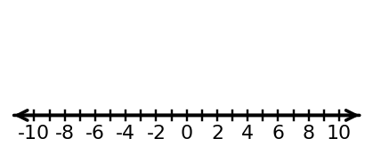
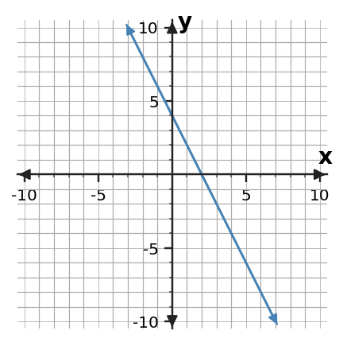

Algebra 1 · 1.4 Expressions and Structure · Extra Practice
1. Rewrite 6x + 4 + 3x - 11 in a simpler equivalent form. Identify which terms you combined and why they are like terms.
2. A student simplifies 5x² + 2x² - x as 6x². Find the error, simplify correctly, and explain why the x-term stays separate.
3. Expand -4(2x - 3) + 5 and simplify. Show the sign on each distributed term before combining constants.
4. The expression 3(x + 4) + 2(x - 1) has two groups. Expand and combine like terms, then check your result at x = 2.
5. In -9x + 14, identify the coefficient, variable term, and constant term. Then explain what the negative coefficient tells you about the variable term.
6. Create an expression with two unlike variable terms and one constant. Label which terms could not be combined and explain why.
7. Two expressions are 4(x + 3) - 2 and 4x + 10. Use distribution or substitution to decide whether they are equivalent.
8. Evaluate 2x² - 3x + 1 at x = -2. Write the substituted expression first so the negative input is visible.
9. A number increased by 7 is at most 19. Write and solve the one-step inequality, then state the solution in words.
10. Solve -5x < 30. Explain why dividing by a negative changes the inequality direction.
11. The solution is x ≥ -2. Describe the correct endpoint and shading on a number line, then sketch it on the blank number line.

12. A student solves x/(-4) ≤ 3 as x ≤ -12. Diagnose the inequality-sign error and give the corrected solution.
13. Write a one-step inequality that has x > 6 as its solution. Then solve your own inequality to verify it.
14. Solve x - 11 > -4 and test one value that belongs to the solution set and one value that does not.
15. A club can spend no more than $48 on tickets that cost $6 each. Write a one-step inequality for the number t of tickets and solve it in context.
16. Compare x < 5 and x ≤ 5. Explain the only point where their solution sets differ and how the number-line endpoints show it.
17. A student plots (2, -7) by moving 7 right and 2 down. Diagnose the coordinate-order mistake and state the correct movement.
18. From the origin, move 4 units left and 9 units up. Write the ordered pair and identify the quadrant in which the point lies.
19. In a graph comparing number of tickets with total cost, tickets are the input. Assign the two quantities to axes and justify the choice.
20. A point is supposed to represent x = -5 and y = 3, but a student places it at (3, -5). Name the error and give the correct point.
21. The y-axis labels are -12, -6, 0, 6, 12, with two equal small intervals between adjacent labels. Determine the value of one small interval and the value one interval above 6.
22. A student assumes every grid step is 1 even though consecutive labeled ticks are 0 and 10 with five equal intervals between them. Correct the scale and explain how that changes coordinate reading.
23. The line shown crosses both axes. Identify the intercepts, then explain how you know which ordered pair is the x-intercept.

24. In a savings model, the graph crosses the y-axis at (0, 45). Interpret the intercept using the meanings “weeks” and “dollars saved.”